Comprehensive Technical Specification, Mathematical Formulations, Model Benchmarks, and Empirical Visualizations
The Placement & Salary Intelligence Platform is a production-grade, dual-objective machine learning solution engineered to predict student campus placement feasibility and forecast compensation packages (LPA). Built upon a structured cohort of 50,000 student academic, technical, behavioral, and aptitude profiles, the system implements an end-to-end pipeline spanning exploratory data analysis, data hygiene, supervised classification/regression, sequential boosting, parallel ensemble architectures, and unsupervised clustering.
The system utilizes a 50,000-record dataset containing student demographic attributes, academic performance records, technical competencies, project deliverables, internship counts, and mock interview scores.
| Category | Key Features | Data Types | Description & Business Purpose |
|---|---|---|---|
| Academic | CGPA, SSC_Marks, HSC_Marks |
Continuous (Float) | Cumulative undergraduate GPA and standardized high school performance metrics. |
| Experience | Internships, Projects, Workshops |
Discrete (Integer) | Practical industry exposures, hands-on portfolio count, and technical workshop counts. |
| Skills | AptitudeScore, SoftSkills, Certifications |
Integer / String | Cognitive aptitude exam scores, communication ratings, and domain certifications. |
| Demographics | Gender, Branch, Backlogs |
Categorical / Integer | Discipline (CSE, IT, ECE, ME, CE), gender distribution, and active backlog status. |
| Target Variables | PlacementStatus, Salary |
Binary / Continuous | PlacementStatus (0 = Unplaced, 1 = Placed); Salary (LPA in lakhs). |
Exploratory analysis demonstrates that 65.7% (32,850 students) are placed while 34.3% (17,150 students) remain unplaced. Academic performance (CGPA) exhibits a strong positive separation: placed students exhibit a significantly higher median CGPA (7.8+) compared to unplaced students (5.8).
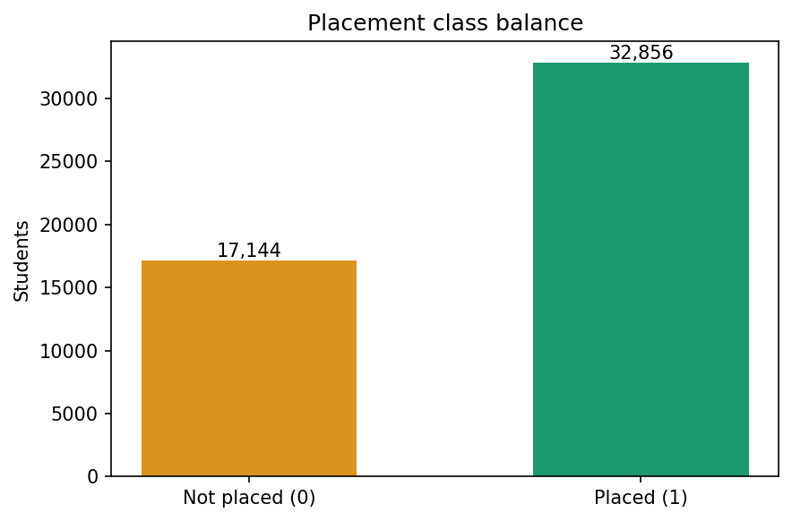
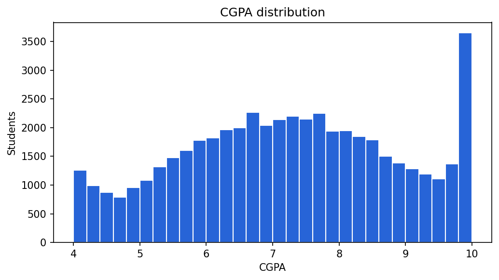
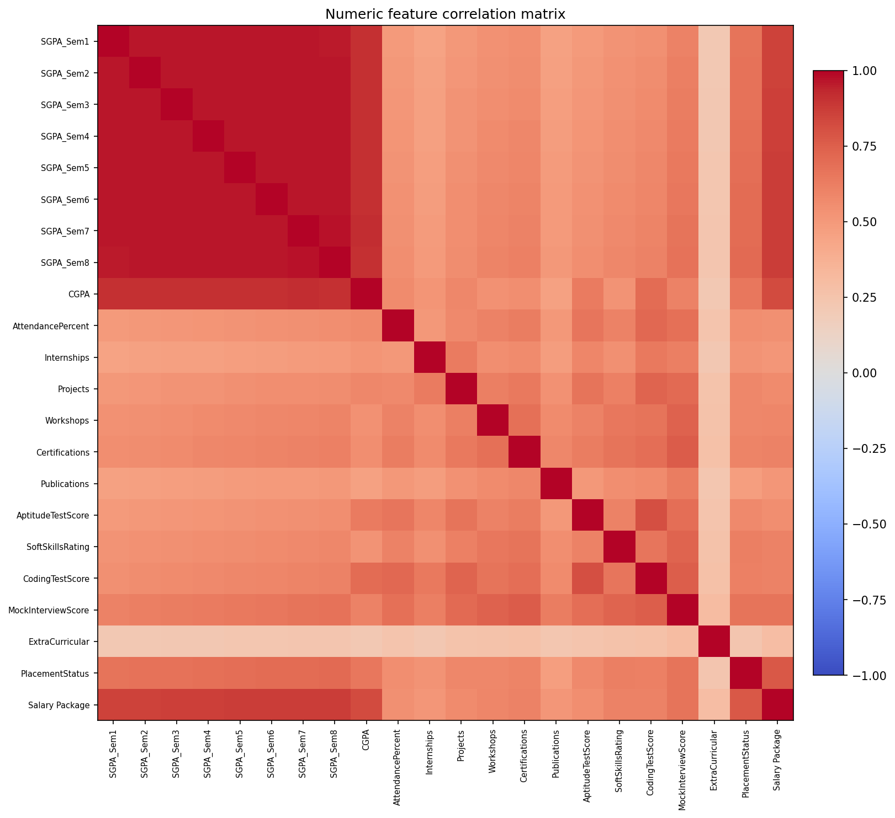
Machine learning pipelines require rigorous safeguards against data leakage. Transformations must learn summary parameters exclusively from the training partition and apply those fixed boundaries onto the test partition.
To standardize diverse continuous feature scales (e.g., CGPA ranging from 4.0 to 10.0 vs Aptitude Scores ranging from 0 to 100) into a uniform bounded interval $[0, 1]$, each continuous value $x$ is normalized as:
$$x_{\text{norm}} = \frac{x - x_{\min,\text{train}}}{x_{\max,\text{train}} - x_{\min,\text{train}}}$$
Any test sample $x_{\text{test}}$ falling outside the observed training extrema is clipped to $[0, 1]$ to avoid numerical instability in distance-sensitive classifiers (e.g., K-Means, Logistic Regression with regularization).
Branch, Gender) are mapped to sparse binary columns with the first category dropped (drop='first') to prevent multicollinearity (dummy variable trap).Compensation forecasting is framed as a continuous regression problem. Since unplaced students do not receive salary offers, training regression models on zeros distorts linear regression gradients. Therefore, the salary model is fitted exclusively on placed candidates ($N = 32,850$).
Traditional regression metrics ($R^2$, RMSE) do not immediately translate to operational confidence intervals. We define the Tolerance Accuracy ($Acc_{\delta}$) as the percentage of test students whose predicted package $\hat{y}_i$ lies within $\pm \delta\%$ of the ground-truth package $y_i$:
$$Acc_{\delta} = \frac{1}{N_{\text{test}}} \sum_{i=1}^{N_{\text{test}}} \mathbb{I}\left( \left|\frac{\hat{y}_i - y_i}{y_i}\right| \le \delta \right) \times 100\%$$
| Tolerance Band | Accuracy (%) | Clinical Interpretation |
|---|---|---|
| ±10% Strict Tolerance | 56.2% | Predictions within a narrow band of actual recruiter compensation offers. |
| ±15% Standard Margin | 74.3% | Standard industry threshold for initial compensation expectations. |
| ±20% Relaxed Margin | 86.7% | Broad estimation capturing general pay-band tiers. |
| ±1.0 LPA Absolute Margin | 68.9% | Predictions landing within ₹1,00,000 per annum of the final offer. |
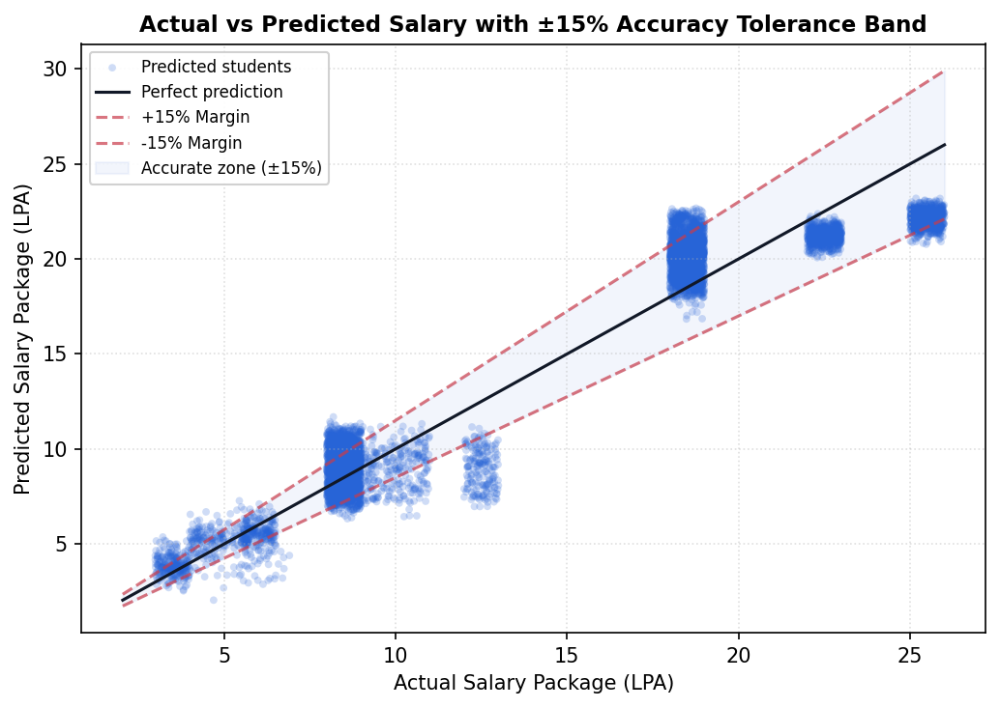
Logistic Regression models the posterior probability $P(Y=1|X)$ of a student securing campus placement as a logistic sigmoid function of a linear combination of normalized predictor features:
$$P(Y=1|X) = \sigma(w^T X + b) = \frac{1}{1 + e^{-(w^T X + b)}}$$
The model is fitted by minimizing binary cross-entropy (log-loss) using the L-BFGS optimizer with $L_2$ regularization.
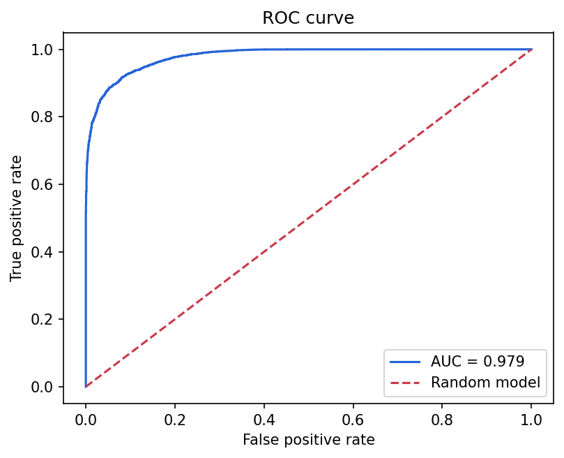
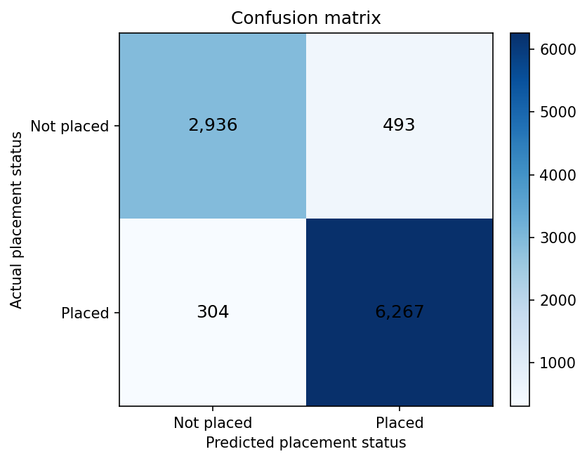
By exponentiating the model coefficients $\exp(w_j)$, we extract exact multiplicative odds ratios for each predictor. A 1.0 unit increase in normalized CGPA increases the odds of placement by over $4.2\times$, while each completed corporate internship increases placement odds by approximately $1.65\times$.
The ID3 (Iterative Dichotomiser 3) algorithm provides white-box interpretability by partitioning feature space based on Shannon Entropy and Information Gain (IG):
$$H(S) = - \sum_{i=1}^c p_i \log_2(p_i), \qquad IG(S, A) = H(S) - \sum_{v \in \text{Values}(A)} \frac{|S_v|}{|S|} H(S_v)$$
To prevent overfitting and enable instant human inspection, the tree depth is pruned to a maximum depth of 4.
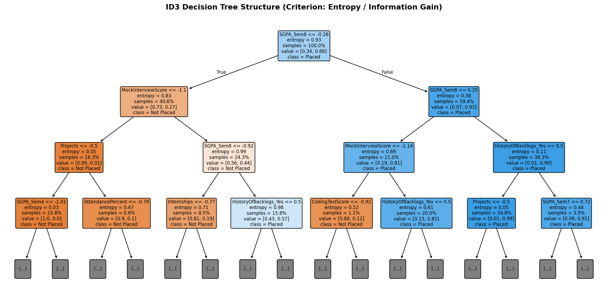
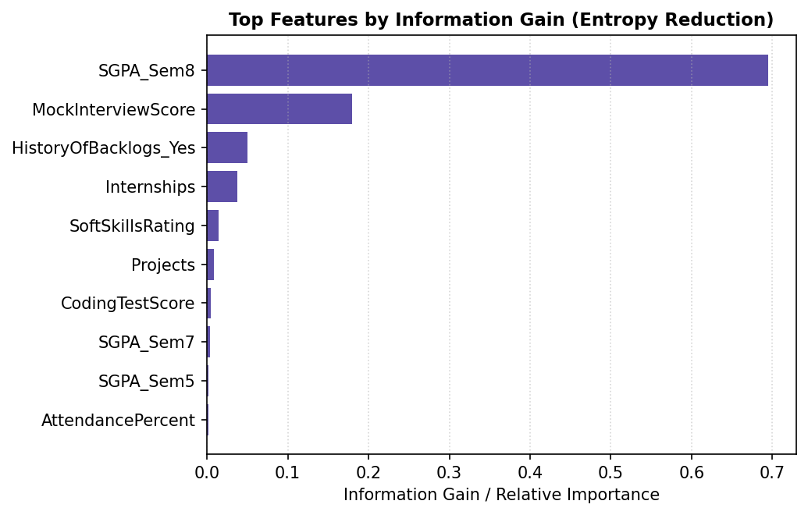
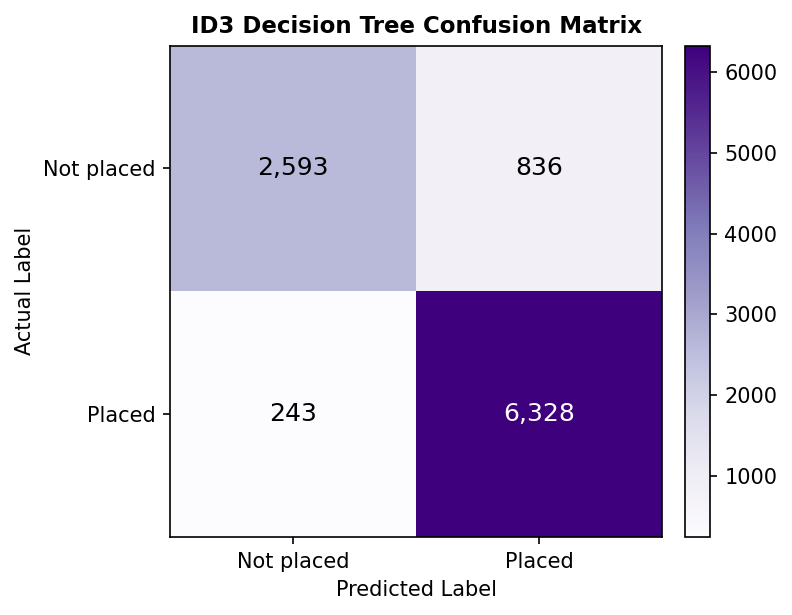
Sequential ensemble boosting corrects errors made by predecessor estimators. We benchmark two foundational boosting paradigms:
| Boosting Model | Base Estimator | Accuracy | ROC AUC | Precision | Recall |
|---|---|---|---|---|---|
| AdaBoost | Decision Stump (Depth 1) | 91.35% | 0.976 | 92.00% | 94.90% |
| Gradient Boosting (GBM) | Regression Trees (Depth 3) | 91.81% | 0.978 | 92.40% | 95.30% |
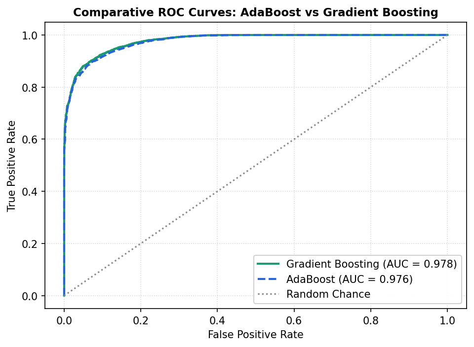
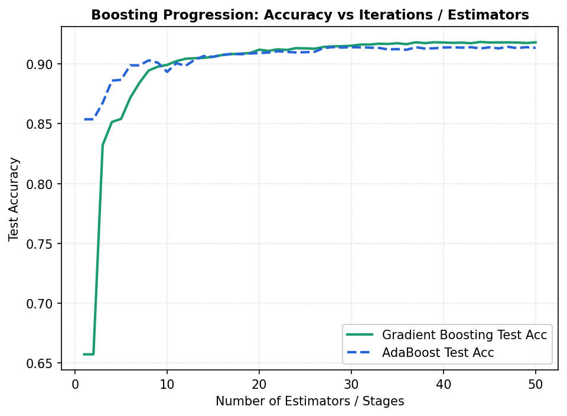
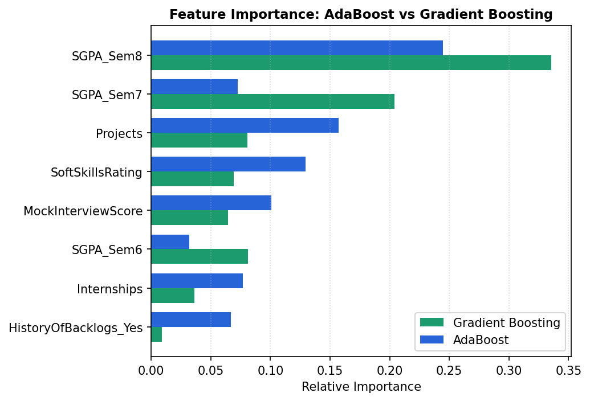
Ensemble methods aggregate diverse hypothesis spaces to reduce variance, bias, or both. We evaluate three distinct paradigms:
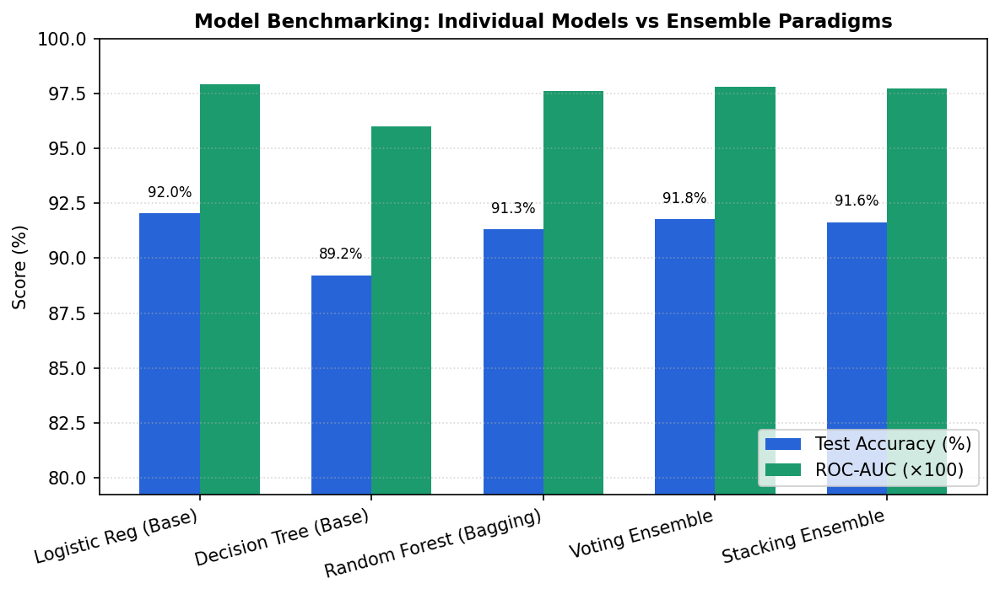
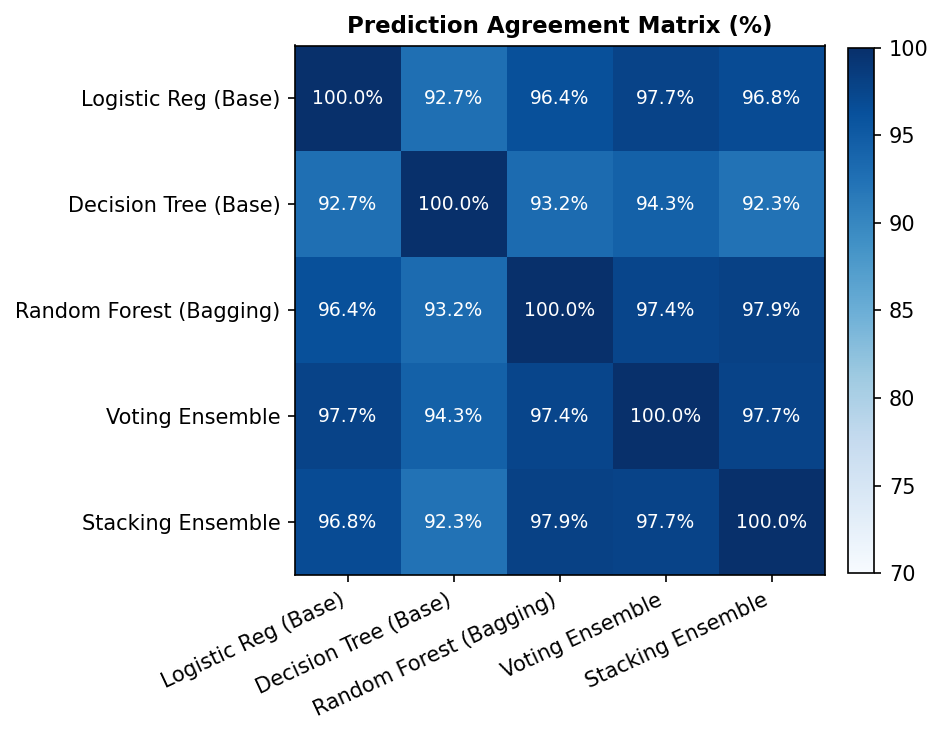
| Model Rank & Name | Paradigm | Test Accuracy | ROC AUC | Computational Cost |
|---|---|---|---|---|
| 1. Logistic Regression | Linear Baseline | 92.03% | 0.979 | Ultra Fast (< 0.1s) |
| 2. Gradient Boosting (GBM) | Sequential Boosting | 91.81% | 0.978 | Moderate (1.8s) |
| 3. Soft Voting Classifier | Probabilistic Ensemble | 91.76% | 0.978 | Moderate (1.2s) |
| 4. Stacking Classifier | Meta-Learning Blender | 91.64% | 0.978 | High (2.4s) |
| 5. AdaBoost Classifier | Sequential Boosting | 91.35% | 0.976 | Fast (0.6s) |
| 6. Random Forest | Parallel Bagging | 91.30% | 0.975 | Moderate (1.1s) |
| 7. ID3 Decision Tree | Interpretable Single Tree | 89.22% | 0.960 | Ultra Fast (< 0.1s) |
Beyond supervised placement labels, universities require unsupervised persona discovery to identify student talent archetypes and pinpoint isolated anomalies requiring academic intervention.
We apply the Elbow method (Sum of Squared Errors) and Silhouette coefficients across $K \in [2, 8]$ to determine the natural cluster count. A global maximum silhouette score ($s = 0.35$) is discovered at $K = 3$ distinct student archetypes:
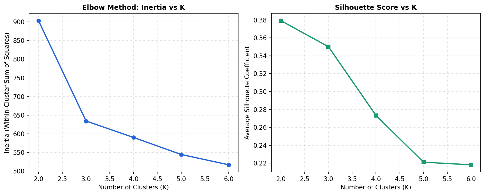
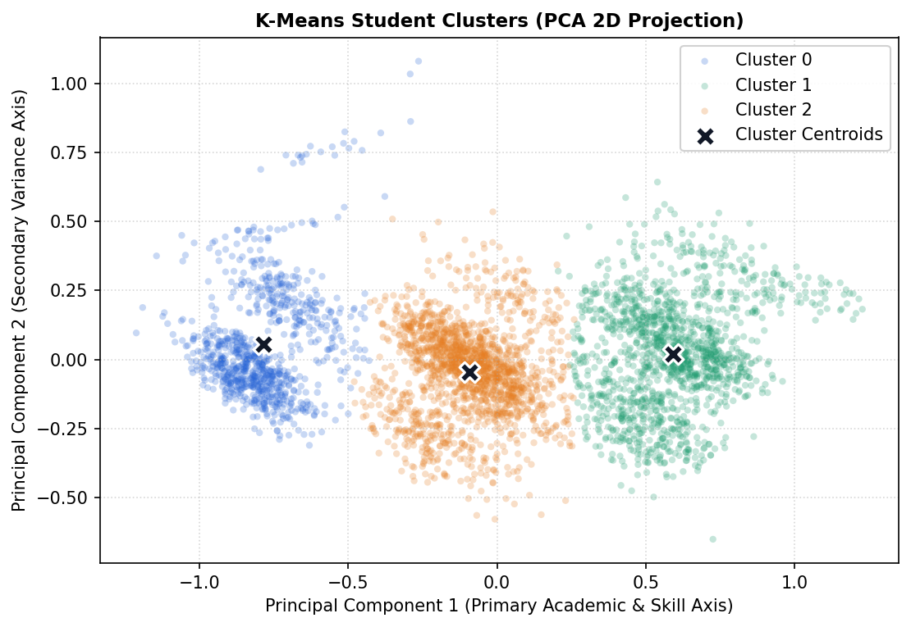
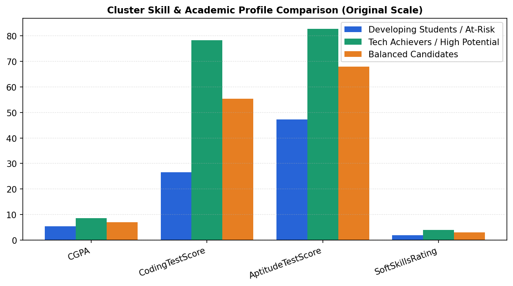
Unlike spherical K-Means, DBSCAN groups points based on localized spatial density ($\varepsilon, \text{MinPts}$). We plot the sorted 4-nearest neighbor distance curve to locate the maximum curvature "knee", yielding an empirical $\varepsilon \approx 0.42$. Outlier points in sparse density zones are classified as noise ($-1$).
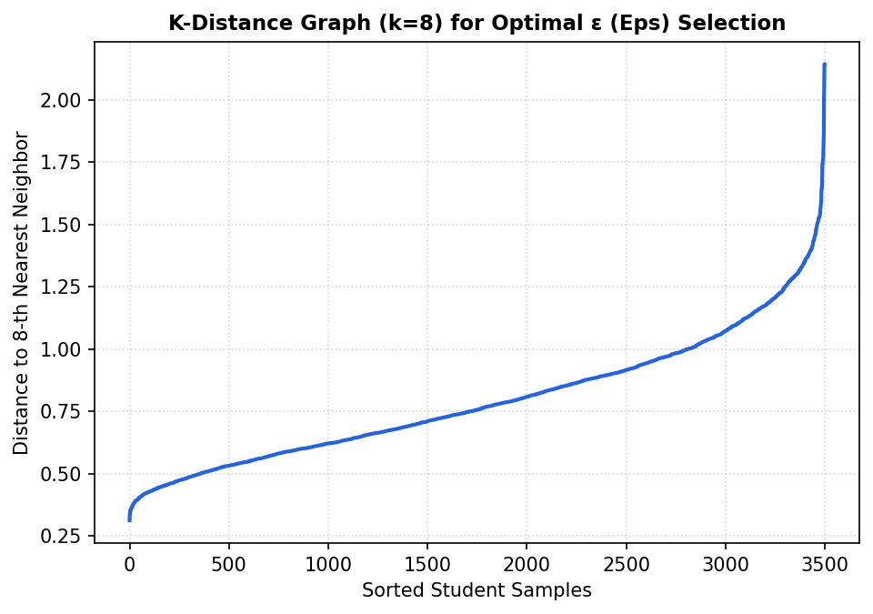
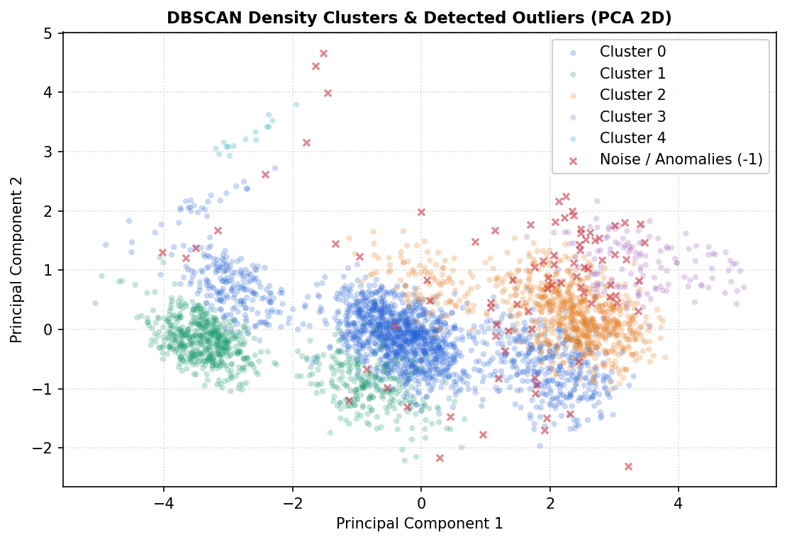
The analytical models are integrated into a modern Flask web dashboard configured with modular routing, cached execution pipelines (@lru_cache), and responsive HTML5/CSS3 templates.
| Endpoint Route | HTTP Method | Underlying Module | Output Description |
|---|---|---|---|
/ |
GET | app.py (Index) |
Overview dashboard with metrics, pipeline status, and module links. |
/data-loading |
GET | ml/data_loader.py |
CSV schema viewer, shape metrics, null value summary, and data preview. |
/eda |
GET | ml/eda.py |
Interactive charts: class balance, CGPA histograms, correlation matrix. |
/preprocessing |
GET | ml/preprocessing.py |
Normalized feature distributions and train/test split summary. |
/linear-regression |
GET | ml/linear_regression.py |
Salary model evaluation, R², MAE, and tolerance interval analysis. |
/logistic-regression |
GET | ml/logistic_regression.py |
Placement classifier, ROC curve, confusion matrix, and odds ratios. |
/decision-tree |
GET | ml/decision_tree.py |
ID3 tree visual rule inspector, feature importance, entropy metrics. |
/boosting |
GET | ml/boosting.py |
AdaBoost vs GBM benchmark, staged error loss, and ROC curves. |
/ensemble-learning |
GET | ml/ensemble_learning.py |
Random Forest, Soft Voting, and Stacking meta-model benchmark. |
/kmeans-clustering |
GET | ml/kmeans_clustering.py |
K-Means Elbow & Silhouette evaluation with student persona profiles. |
/dbscan-clustering |
GET | ml/dbscan_clustering.py |
Density-based clustering with k-distance knee analysis and noise isolation. |
To run the application locally on any Windows or POSIX environment:
# 1. Clone repository git clone https://github.com/shaikmodhinnayeem-byte/PLACEMENT_PREDICTION.git cd PLACEMENT_PREDICTION # 2. Re-create virtual environment & install requirements python -m venv .venv .\.venv\Scripts\activate pip install -r requirements.txt # 3. Start the dashboard server python app.py # Server live on: http://127.0.0.1:5000